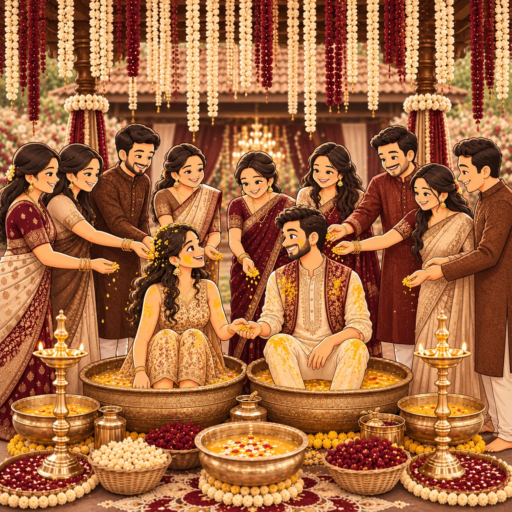

॥ શ્રી ગણેશાય નમઃ ॥

માર્ગીઅનેસાહિલ
૮ - ૧૦ ફેબ્રુઆરી ૨૦૨૭ · રાજકોટ
॥ શ્રી ખોડિયાર માતાજી ॥
॥ શ્રી ગણેશાય નમઃ ॥
॥ શ્રી દ્વારકાધીશ ॥
સહર્ષ ખુશાલી સાથ જણાવવાનું કે શ્રી ખોડિયાર માતાજી, શ્રી સુરપુરા દાદા અને શ્રી દ્વારકાધીશની અસીમ કૃપાથી અ.સૌ. ક્રિષ્નાબેન તથા શ્રી ચંદુભાઈ બાવનજીભાઈ પીપળીયાની સુપુત્રી
ચિ. માર્ગી
ના શુભલગ્ન
ચિ. સાહિલ
લી. સ્નેહાધીન
| સ્વ. બાવનજીભાઈ અંબાભાઈ પીપળીયા | સ્વ. ગલાલબેન બાવનજીભાઈ પીપળીયા |
| શ્રી દિલીપભાઈ બાવનજીભાઈ પીપળીયા | સ્વ. કંચનબેન દિલીપભાઈ પીપળીયા |
| શ્રી ચંદુભાઈ બાવનજીભાઈ પીપળીયા | અ.સૌ. ક્રિષ્નાબેન ચંદુભાઈ પીપળીયા |
| લી. દર્શનાભિલાષી | શુભેચ્છક |
|---|---|
| ધૈર્ય પીપળીયા | નિરાલી ફૂડ મશીનરી |
| કિંજલ તથા ચિંતન સિરોયા | પ્રગતિ એન્જિનિયર્સ |
માંગલિક પ્રસંગો
પવિત્ર પરંપરાઓથી માંડીને હાસ્ય, સંગીત અને નૃત્ય સુધી — આપના સાથથી દરેક ક્ષણ વધુ સુંદર બનશે.

મંડપ મુહૂર્ત
સોમવાર તા. ૮.૨.૨૦૨૭વિધિ સવારે ૨:૩૦ કલાકે
ભોજન સમારંભ: સાંજે ૭:૩૦ કલાકે

ગ્રાન્ડ ગરબા(મેઈન ફંક્શન)
મંગળવાર તા. ૯.૨.૨૦૨૭સાંજે ૮:૦૦ કલાકે
ભોજન સમારંભ સાંજે ૭:૩૦ કલાકે
પરિધાન: પરંપરાગત ગુજરાતી વેશભૂષા

લગ્ન મુહૂર્ત
દેવી-દેવતાઓની સાક્ષીમાં, અમારા સદાકાળના સાથની શુભ શરૂઆત!
બુધવાર તા. ૧૦.૨.૨૦૨૭જાન આગમન સાંજે ૪:૦૦ કલાકે
હસ્ત મેળાપ સાંજે ૭:૩૦ કલાકે
ભોજન સમારંભ સાંજે ૮:૦૦ કલાકે
હૃદયની અભિલાષા
“આપના આશીર્વાદ એ જ ચાંદલો”
રાજકોટમાં અમારી સાથે જોડાઓ
ત્રણેય પ્રસંગો એક જ સુંદર સ્થળે યોજાશે. આપનું સ્વાગત કરવા અમે આતુર છીએ.
પ્રસંગનું સ્થળ
શુભ લગ્ન સ્થળ
ડ્રીમલેન્ડ પાર્ટી પ્લોટ
રાજકોટ, ગુજરાત ૩૬૦૦૦૫, ભારત
સ્થળ અને માર્ગદર્શન જુઓ